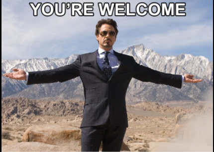

<!-- 1)  თავისუფალი თემა: 
ააგეთ ვებსატი საყვარელ თემზე, გამოიყენეთ აქმდე ნასწავლი მასალა button, img, p, h1...h6, img, cneter, marquee, hr, 
ფაილების სტქურტურა დაიცავთ აუნუ ინტედნატია და ასევე assets ფოლდერში შექმენით, images ამ იმიჯებში ჩააგდეთ სურათები! -->

<h1>მოგესალმებით ჩემს საიტზე</h1>

